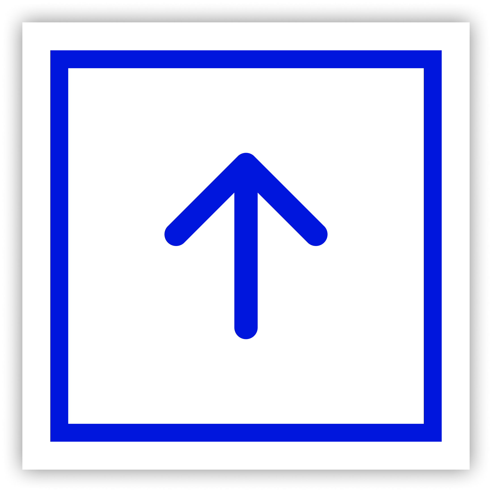
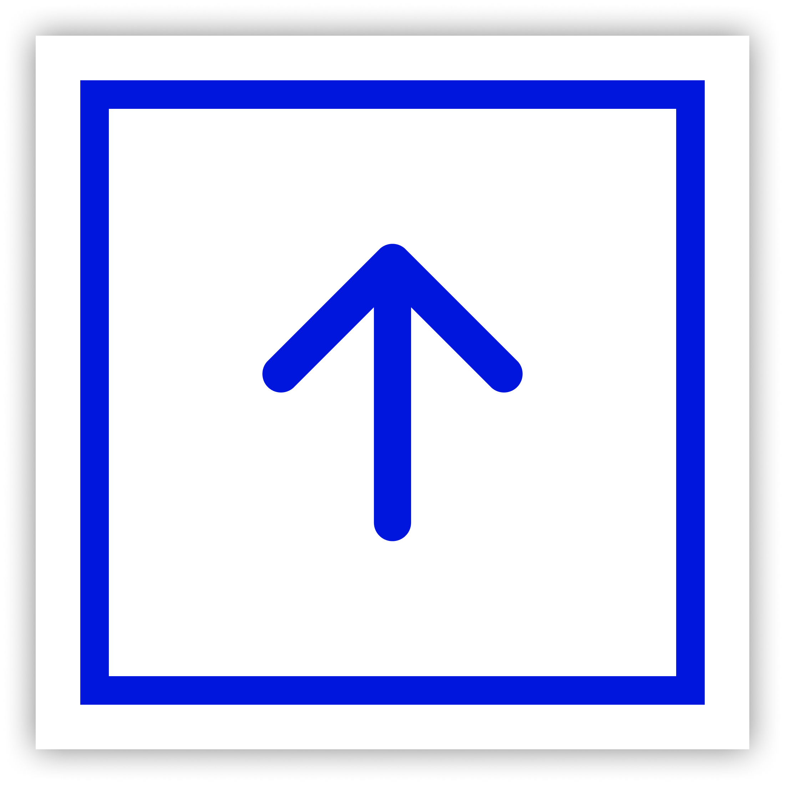

As this is an international week project, we were tasked by Woonbedrijf (our stakeholder) to design an interactive tool for Vestide, a part of Woonbedrijf that stimulates students to share their ideas about what the core values mean for them if they would be a part of the LOT community.
We were tasked to answer the research question already given by the international week, which is:
“In what way can new technologies contribute to reaching Sustainable Development Goals (SDG’s)?”

This is the most direct way to get students to tell us on being a part of a community and how they'd want to share their core values. Here are the results.

Students expressed that they would like to express their ideas for the core values using their phones, with apps / websites.
Students favoured displaying their values on the form of visualisation rather than text-based.
Students stated that to feel like they're in a community, they need to be in a physical space where they meet people, in a relaxed enivronment.
After knowing what the students feel and want, we dive into new technologies (part of the main question).
After countless research, we found that AI is the most suitable for this project, since it's widely known and more simple, realistic, and feasible to use and maintain than other tech trends. Also, since the students said visual, we decided to go with AI image generators.
We concluded that the best AI Image generator is Midjourney, since they produce the most realistic photo, and has the ability for custom ratios and other flexibilites. This is validated through the interview where students say they want a visual representation of their ideas/inputs.

To represent the different user types (students) that might use our design, we created 2 personas, one is a local Dutch student, and the other is an international student.
Now that we know the sort of person who we should design for, it's time to list the features of the design of our app & website, and how we show the design in real life. This is primarily based on the interview results.
It was stated before that the students need to be in a physical space where they meet people, in a relaxed enivronment. We concluded that a cafe is the best environment for the students to hang.
As you can see, these aren't normal cafe tables. They are touchscreen/tablet embedded tables that students can interact with. This is the wireframe of the touchscreen tables.
We chose this diamond design because we were inspired by diamond/checkered pattern in tablecloth & will attract people's attention. The content that will be generated are student's core values and other students can vote which core values are most important for them.
In case students are not on the cafe, they can still vote for core values and see artwork from their phones and desktop. This is validated by preference of using phones and websites.
This is the final prototype of the tablet embedded tables. I recommend opening it in Figma to get the full experience.
To get the full details of our idea and designs, we made a video explaining the whole concept and how it works. Check it out :)
We showed the video above to our stakeholders Woonbedrijf. Here are their feedbacks on the project.
“I like the idea of having a space where people can hang out; I think that the concept of embedding tablets into a table in a communal area is very feasible yet creative.” – Sam, Group M
“You should do more research on giving incentives to users to share their thoughts using your design. While giving them monetary items may be nice to some people, it may not be a good enough motivation for others. But overall, I’d say that's a good idea, considering you came up with these in 5 days!” – Sam, Group M
We concluded that by using AI image generators to visualise students' idea on core values & uploading their thoughts by their phone or website, with a voting system that students can participate by phone and tablet-embedded tables on a cafe to form a community, we can use new technologies contribute to reaching SDGs, specifically goal number 11: Sustainable cities and communities. With that, we have answered our research question. Thank you for reading!